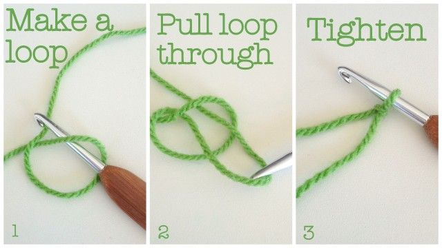
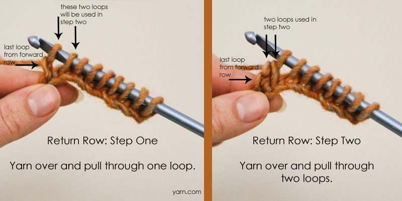

Home
Gallery
About
Contact
How to Crochet
To start crocheting you need to pick the proper string and needle, the label on the string will tell you which size needle you need.  As the picture above shows you are going to make the knots until you reach the length you want.
Once you reach the length you want you can begin working on the second row.  You can repeat these steps to create even more rows and eventually create a scarf or a blanket.
This last images just help show the previous step in more detail.
And this is the basics to crocheting.